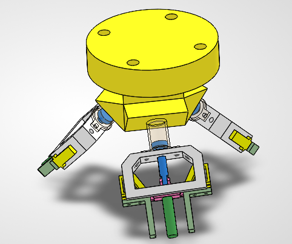
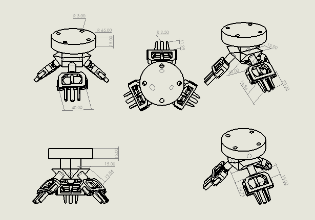
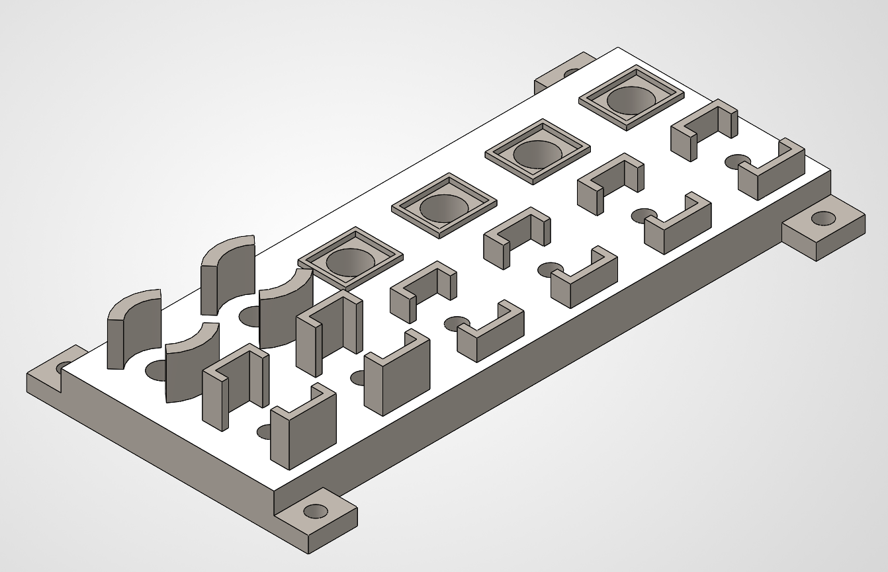
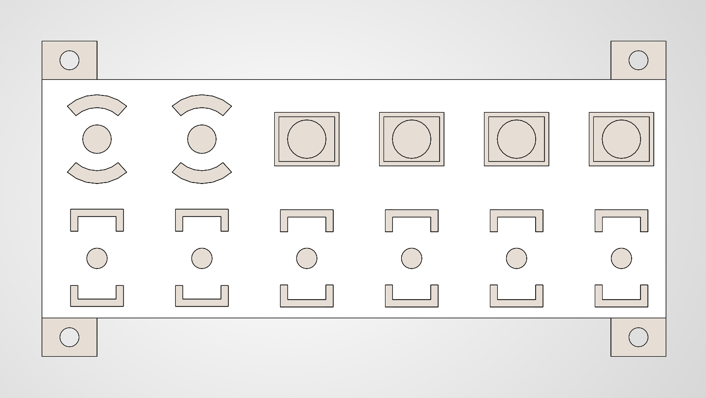
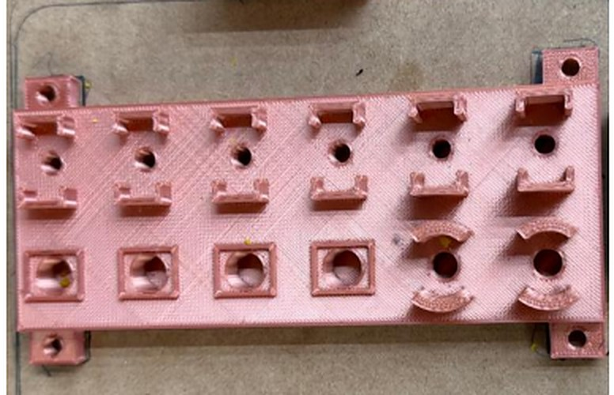
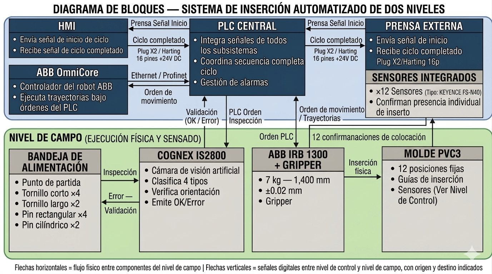
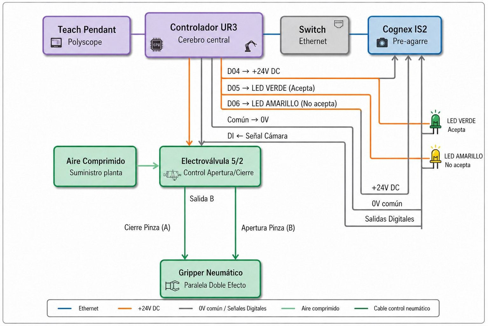
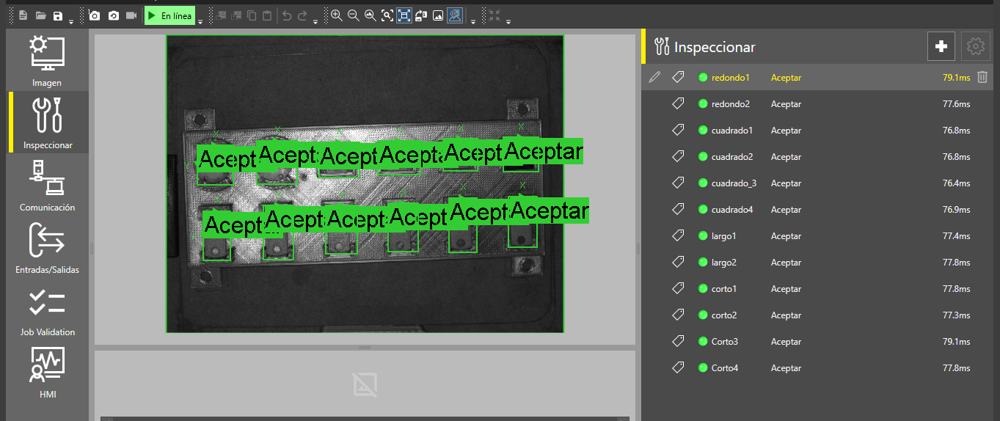
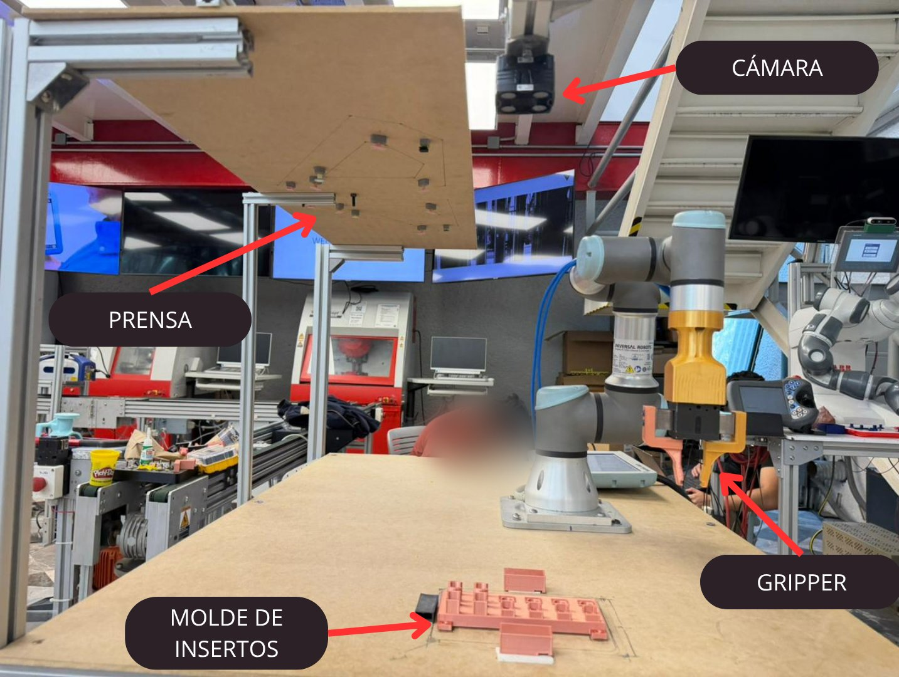
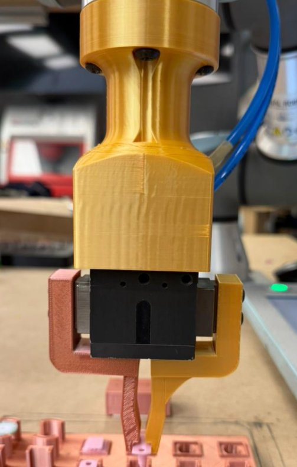

Automated robotic insert loading cell
A robotic cell that loads the 12 inserts of an automotive window into a molding press, so the operator no longer steps into the press area on every cycle. Cognex vision checks each insert before the robot picks it. Results for the industrial cell come from simulation and projections; prototype results were measured on the UR3 build in the lab.

- Loading cycle, from 120 s by hand
- < 50 s Simulation
- Full 12-insert cycle on the UR3 prototype
- < 80 s Prototype
- Correct Cognex detections across the four insert types
- 15/15 Prototype
The challenge
At Vitro Monterrey's window molding press, an operator loaded 12 inserts by hand on every cycle: 4 short screws, 2 long screws, 4 rectangular pins and 2 cylindrical pins, each in a fixed position and orientation. That meant stepping into the press area and working in awkward postures for the full 120-second cycle.
The process had no check before the pick. A wrong insert showed up only after it was placed, when the Keyence sensors reported a bad position, or in the finished part, when it was too late to fix. The plant already had 12 Keyence FS-N40 sensors in the mold holes, but the loading itself had never been automated, and the cell had only 1.9 × 4.2 m of space. The project was to design a cell that takes the operator out of the press area, checks each insert before the pick and completes a loading cycle in 115 seconds or less.
What I did
- Led the project as project manager, planning and tracking the schedule and deliverables and coordinating the mechanical, controls, vision and economic workstreams, from the plant floor assessment at Vitro to the working prototype.
- Designed the insert tray in CAD with a poka-yoke approach: fixed slots shaped to each of the four insert geometries, so every part sits in a known position before the robot picks it, preventing errors from the very first pick.
- Designed the electrical and network architecture for both the industrial cell and the UR3 prototype, and wired the prototype in the lab.
- Built the economic analysis for the industrial cell: investment, net annual savings and payback.
Two systems, one process
This page covers two systems that run the same loading process but are not the same machine.
- Industrial cell, a design. An ABB IRB 1300-7/1.4 with its OmniCore controller, a central PLC and HMI, a three-gripper end effector in 6061 aluminum that handles all four insert geometries without a tool change, a Cognex IS2800 camera, and the 12 Keyence FS-N40 sensors already in the press. It exists only in CAD and in the RobotStudio simulation.
- Prototype, built in the Smart Factory lab. A UR3 robot, a pneumatic two-finger gripper (PHD 19092-2) with 3D-printed PLA jaws, a 5/2 solenoid valve, the same Cognex IS2800, control from the teach pendant in PolyScope with no PLC and no Keyence sensors, and a mock-up of the press in MDF.
Industrial cell
The robot is an ABB IRB 1300-7/1.4 with a 7 kg payload, 1,400 mm reach and ±0.02 mm repeatability, programmed in RAPID. In the simulation the press is modeled in a simplified way, as two columns spaced like the real ones from the plans Vitro provided, which is enough to check that the robot reaches all 12 mold positions.
The end effector is a three-gripper design in 6061 aluminum, CNC machined: one tool carrying three small grippers. Each has two gripping jaws and a push jaw in the center that seats the insert, so the robot can carry up to three inserts per trip. In the simulated sequence the 12 inserts are loaded in five groups of two or three. The team chose it over an alternative that swaps tools automatically, which would add 9 to 15 seconds to every cycle, add weight against the 7 kg payload and add a mechanical failure point that could stop production. One tool for the whole cycle keeps the sequence short and the design simple.
-

CAD model of the industrial three-gripper end effector. -

Drawing of the end effector with its main views.
Insert tray
The tray organizes the four insert types in fixed zones, one per geometry: short screws, long screws, rectangular pins and cylindrical pins. It follows a poka-yoke approach, with slots shaped to each insert, so every part sits in a known position before the robot picks it and mix-ups are prevented from the very first pick. That removes variability at the source and makes the camera's check simpler. The operator loads the tray at the start of each shift and does not step in during the cycle.
- The prototype tray is 3D printed in PLA (FDM), 170 × 65 × 11.5 mm, with a tolerance of ±0.2 mm, and is bolted to the MDF table.
- For the industrial cell, the tray would be CNC machined in 6061 aluminum or similar instead of 3D printed, for durability and dimensional precision in continuous production.
-

Insert tray in CAD, isometric view. -

Top view: one fixed zone per insert geometry. -

The printed insert tray, close up.
Control and network
Industrial cell. A central PLC coordinates the whole cycle. It receives the start signal from the press, sets the pick order for the 12 inserts, allows each robot move only after the camera validates the part, and sends trajectory commands to the ABB OmniCore controller, which executes them. It also checks the Keyence confirmation of each position and signals the press that the cycle is complete only when all 12 sensors confirm. The press and the PLC exchange start and cycle-complete signals over the existing 16-pin Harting connector at 24 V DC, and the PLC and OmniCore talk over Ethernet/Profinet. A touchscreen HMI outside the cell shows the system state, shows alarms that name the position or subsystem that failed, and has the emergency stop.
Prototype. There is no PLC. The UR3 runs the whole sequence from its teach pendant in PolyScope. The Cognex camera talks to the robot controller over Ethernet through a switch, and the double-acting two-finger gripper opens and closes through a 5/2 solenoid valve whose coil is driven from digital output DO4 of the UR3. Two indicator lights show the camera result.
| Signal | Function | Type |
|---|---|---|
| DO0 | Triggers a Cognex photo | Output |
| DO1 | Cognex camera online | Output |
| DO4 | Gripper solenoid valve (24 V DC) | Output |
| DO5 | Green light: detection OK | Output |
| DO6 | Orange light: Cognex detection error | Output |
| DI5 | Cognex OK signal | Input |
| DI6 | Cognex NOK signal | Input |
See the original block diagram and UR3 wiring diagram from the report


The original diagrams keep their Spanish labels.
Vision
Industrial cell. The Cognex IS2800 gets the inspection order from the PLC and captures the insert in its tray zone at 1440 × 1080 pixels, with a response time under 100 ms. It identifies the part type, checks its orientation against the mold's reference axis and sends an OK or error signal to the PLC before the robot moves to pick. After the placement, the 12 Keyence FS-N40 sensors confirm each insert position by position. Together they form two barriers, one before the pick and one after the place. In the design logic, an insert that is not confirmed triggers an automatic reinsertion: the robot identifies the missing insert and places a new one.
Prototype. The prototype has the camera but no Keyence sensors, so the check happens only before the pick. The camera was tested 15 times across the four insert types and detected every insert correctly, against a goal of at least 95%.

Prototype
The prototype is a working mock-up of the press, built in the Smart Factory lab at Tecnológico de Monterrey. An MDF plate (122 × 40 cm) stands in for the upper half of the mold, held by two steel pillars at the UR3's working height. Under it, 12 holders with holes, one per insert and 3D printed, follow the general layout of the real mold, with modeling clay inside each hole to keep the inserts in place. Vitro gave the overall press dimensions and working area but not the exact hole positions, so the layout is representative rather than exact. As in the real operation, the robot reaches in from below and lifts its arm to push each insert up into the mold.
The sequence runs from PolyScope. The arm starts from a safe home position and moves to the tray. Before each pick it triggers the Cognex camera. On an OK result the green light turns on, the valve closes the gripper, and the robot carries the insert to its position in the mold and releases it. On a NOK result the orange light turns on, and the robot waits and retries the capture without picking. This repeats for all 12 inserts, and the robot returns home. On the UR3 build the full cycle ran in under 80 seconds, with all 12 inserts placed correctly and the operator outside the press area.

-

The prototype's two-finger gripper with printed jaws, over the tray.
Safety
The industrial cell was designed against NOM-004-STPS-1999 and ISO 10218-2:2025. Both put eliminating the worker's exposure to the risk zone ahead of only reducing it, and that is the idea behind the design: the operator no longer enters the press area during the automatic cycle. The cell is enclosed by perimeter fencing with interlocks, and the HMI sits outside, so the operator supervises the process and can reach the emergency stop without going in.
Results
Loading cycle for the 12 inserts. The industrial cell is a design checked in RobotStudio; the prototype was built and run on a UR3.
- Manual operation
- Hatched: simulation
- Solid: physical prototype
The RobotStudio simulation checked four things: the layout fits the 1.9 × 4.2 m area, the robot reaches all 12 mold positions, nothing collides, and the cycle comes in under the 115-second target, at under 50 seconds.
For the industrial cell, the base scenario assumes an investment of about $54,000 and net annual savings of $19,200, which is $24,000 of direct labor minus $4,800 of maintenance. That gives a payback of about 2.8 years and a positive net present value over five years at a 10% discount rate.
Cumulative net savings of the industrial cell, base scenario, in US dollars.
- Hatched: projection
Project timeline
The ten phases of the project and their dates, from the report's activity plan.
Watch the team's RobotStudio simulation and the prototype video.
Figures, tables and results come from the team's integrated technical report for the course, dated June 12, 2026.
What I learned
Leading a team is mostly organizing it. As project manager of a four-person team, I had people working on two fronts at once: the industrial cell in simulation and the prototype in the lab. My job was to split the work, set the deliverables and dates, and make sure each piece was ready when the next one needed it, while trusting each teammate with their own area.
You rarely get all the information. Vitro gave us the press dimensions and the available work area, but not the exact position of each insert in the mold. Instead of waiting for data that wasn't coming, we defined a representative layout from what we had and kept the project moving.
Problems have to be part of the plan. The first gripper concept proved too complex for the lab, the pneumatics took several rounds of testing, and the jaws needed multiple print-and-adjust cycles, all while reports, tests and the final presentation were due. Planning backups early, like spare printed parts and a borrowed gripper as plan B, is what let us absorb those setbacks.